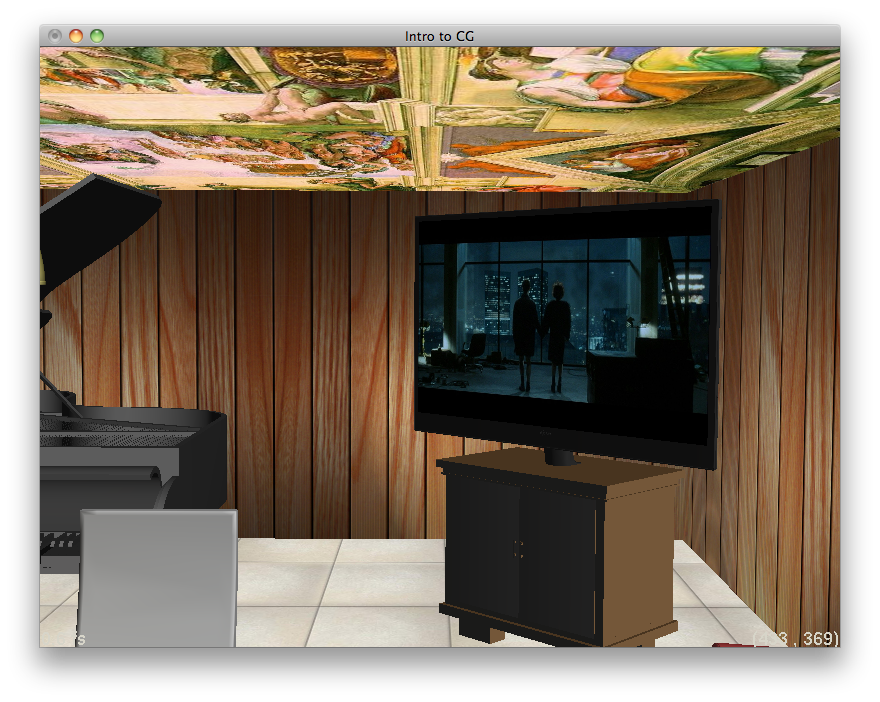

Graphics Assignment #3
CS 4810: Graphics
Assignment #3: OpenGL
Tom Crossland (tcc4dr)
Compiled with g++ / Mac OS X 10.6.8
Camera and Scene-Graph Nodes (2)
The first task I had to perform was to set up the camera in OpenGL. As far as openGL is concerned, the camera is always located at point (0,0,0). The camera coordinate system is that with the orthogonal basic vectors of the camera's up, right, and direction vectors with origin at the camera location. In order to move the camera, we must actually move the scene relative to the camera. To do this, I used the gluLookAt function. This takes in the position you want your camera to appear to move to, a point along the direction vector of the camera, and the up vector. The function calculates the inverse camera transform according to these values. The matrix is multiplied onto the current matrix stack, which should be the model view. This transforms the scene so that it is in the camera coordinate system and gives the illusion of having a camera not at the origin in the world view coordinates.
I then had to draw the scene-graph nodes. I looped over all the shapes in the group and called their functions to draw themselves in openGL. This seemed rather trivial. These important tasks can be checked by the correct results given throughout this write up. The following were rendered with these commands:
./Assignment3 --in ./tcc4dr_HTML/Input/test.ray --cplx 100
./Assignment3 --in ./tcc4dr_HTML/Input/test_close.ray --cplx 100
./Assignment3 --in ./tcc4dr_HTML/Input/test_far.ray --cplx 100
./Assignment3 --in ./tcc4dr_HTML/Input/test_newloc.ray --cplx 100
Figure 1.1 test.ray with a camera at (0,10,10)

|
Figure 1.2 test.ray with a camera at (0,5,5)
|
|
Figure 1.3 test.ray with a camera at (0,15,15)
|
|
Figure 1.4 test.ray with a camera parameters Pos:(-0.931387,1.30689,-12.9228), Dir: (0.0319019,-0.0526238,0.998105), Up: (0.419983,0.90688,0.0343905)
|
|
The above images show the different camera locations. Figure 1.1 will serve as a baseline. In Figure 1.2, the camera is located at (0,5,5), closer to the scene than Figure 1.1. Therefore, the objects appear larger and closer to the camera. In Figure 1.3, the camera is located at (0,15,15), further from the scene than Figure 1.1. Therefore, the objects appear smaller and further from the camera. In Figure 1.4, the affect of choosing different position coordinates and up and directional vectors can be scene. In all these scenes, the objects in the scene are successfully converted to the camera coordinate system, giving the allusion that the camera is in a different location than the origin in the scene.
Drawing Spheres (1)
Drawing spheres is a simple OpenGL process. The spheres are first drawn in the object coordinate system. I used the OpenGL function gluSphere to draw the spheres. This renders a sphere at the origin with a given radius and horizontal/vertical complexity level. This complexity level is inputted by the user. In order to allow for spheres to be centered in the object coordinate system at places other than the origin, I applied a translation to sphere from the origin to the desired new center. This translation was done in the object coordinate system. The following were rendered with these commands:
./Assignment3 --in ./tcc4dr_HTML/Input/test.ray --cplx 5
./Assignment3 --in ./tcc4dr_HTML/Input/test.ray --cplx 10
./Assignment3 --in ./tcc4dr_HTML/Input/test.ray --cplx 100
./Assignment3 --in ./tcc4dr_HTML/Input/multi-lights.ray --cplx 100
Figure 2.1 A sphere in test.ray with complexity of 5
|
|
Figure 2.2 A sphere in test.ray with complexity of 10

|
Figure 2.3 A sphere in test.ray with complexity of 100
|
|
Figure 2.4 Video of spheres in multi-lights.ray. Click here to view the video.
The above figures show the ability for spheres to be drawn. Because spheres have a curved surface, the complexity level affects the rendering process. In Figure 2.1, the curved portion of the sphere is clearly made up of 25 quadrilaterals (5 vertical divisions, 5 horizontal divisions). In Figure 2.2, the curved portion of the sphere is made up of 100 quadrilaterals (10 vertical divisions, 10 horizontal divisions). In Figure 2.3, the curved portion of the sphere is made up of so many quadrilaterals, the surface has the illusion of seeming curved. The higher the complexity level is, the more curved the surface seems. The first three figures also show that local transformations can be applied to the spheres. In Figure 2.4, multiple spheres can be drawn. The spheres are shown to be originally centered at different locations besides the origin in the object coordinate system. Figure 2.4 also shows that camera movement does not make the locations of the fixed spheres seem to move. Also, correct occlusion can be seen when one sphere is in front of another sphere.
Drawing Triangles (2)
Drawing spheres is a simple OpenGL process. A triangle is made up of three vertices. To draw a triangle, you must specify its three vertices in between glBegin(GL_TRIANGLES) and glEnd(). These vertices contain a position and normal. The vertex position is specified using glVertex3f. It associates the last normal loaded with it as that vertices' normal. To specify a normal, you must call glNormal3f before the call for the vertex you want to associate it to. All these positions and vectors are specified in the local coordinates. The following were rendered with these commands:
./Assignment3 --in ./tcc4dr_HTML/Input/dog.ray
./Assignment3 --in ./tcc4dr_HTML/Input/bunny.ray
./Assignment3 --in ./tcc4dr_HTML/Input/buddha.ray
Figure 3.1 Many triangles making the visible object in dog.ray
|
|
Figure 3.2 Many triangles making the visible object in bunny.ray
|
|
Figure 3.3 Many triangles making the visible object in buddha.ray
|
|
The above images were constructed using many triangles. Figures 3.1, 3.2, and 3.3 all have triangles with specified vertices. These vertices have a position and a normal. These positions seem correct because they construct the object they were supposed to render. These normal seem correct because of the smooth lighting seen in the scenes.
Drawing Material Properties (2)
Material properties can be implemented in OpenGL. The current material for a rendered object is like a state. The object is drawn with the last material specified. To change materials, the drawOpenGL for the material of a primitive was called right before it would be drawn. In this method, the ambient, diffuse, specular, emission, and shininess properties could be changed using the glMaterialf{v} function. This function allows for the various properties to be changed to a four-tuple color as parsed from the material specified in the ray file. GL_AMBIENT, GL_DIFFUSE, GL_SPECULAR, and GL_EMISSION could be specified in the function to indicate what you are changing. The shininess is a constant number, so its altered value is only a one-tuple, not four-tuple. Note that I did not choose to implement transparency as a material property. To generate the following images, I commented out glMaterialf{v} declarations of the material properties to isolate or remove some material properties in the rendering process. The final code submitted does not have anything commented out. To achieve global ambient light, I changed rayScene.ray to account for this in the lighting model. The following were rendered with these commands:
./Assignment3 --in ./tcc4dr_HTML/Input/test.ray --cplx 100
./Assignment3 --in ./tcc4dr_HTML/Input/multi-lights.ray --cplx 100
./Assignment3 --in ./tcc4dr_HTML/Input/test_specular_128.ray --cplx 100
./Assignment3 --in ./tcc4dr_HTML/Input/test_specular_100.ray --cplx 100
./Assignment3 --in ./tcc4dr_HTML/Input/test_specular_60.ray --cplx 100
Figure 4.1 Only ambient and emissive material properties enabled for test.ray
|
|
Figure 4.2 Only ambient and emissive material properties enabled for multi-lights.ray
|
|
Figure 4.3 Addition of diffuse material property to test.ray
|
|
Figure 4.5 Addition of specular material property to test.ray
|
|
Figures 4.1 and 4.2 show the affect of enabling just ambient and emissive lighting. The ambient lighting represents reflection of all indirect illumination. The intensity of the ambient light is equal to the ambient light specified in the scene times the material's ambient coefficient. Emission represents light emanating directly from a surface that cannot be described by point, spot, or directional lights. The intensity is equal to the emission intensity for the scene.
Figures 4.3 and 4.4 add diffuse material properties to the mix. All the materials look extremely matte or chalky. The different colors of diffusion as specified by the materials can be seen, especially in Figure 4.3. The multi-light scene (Figure 4.4) has three lights: a directional light parallel in the direction of (-1,-1,0) that is red, a white point light above the smaller sphere, and a cyan spotlight in front of and off to the left of the large sphere, pointing parallel to the x axis (straight right). One can observe how the colors of the lights affect the diffuse lighting component. The large sphere originally has a diffuse of yellow. However, the addition of the cyan spotlight and the red directional light make the sphere appear to be green and red-orange, respectively. The same principles can be seen with the smaller sphere.
One can see that the specular highlights occur in locations in which the angle between in the vector from the surface intersection to the viewer and the vector from the intersection to the light reflected over the surface normal is zero. The specular coefficients of the materials are also present. Notice the specular highlights in Figures 4.5 and 4.6. The properties of the specular fall off were also tested. When the fall off is 128, the highlight is sharp and not spread out, as evident in Figure 4.7. As the fall off decreases, the specular highlight regions grows as evident in Figures 4.8 and 4.9 for when the fall off is 100 and 60 respectively.
Drawing Light Sources (3)
OpenGL calculates each pixel's color. Part of this calculation is the lighting. OpenGL much realize how the objects react to the presence of different types of lights. There are three different types of lights implemented: direction, point, and spot. Lights in OpenGL are indexed based off of GL_LIGHT0. To access the i-th light in OpenGL, you use GL_LIGHT0+i. You can specify parameters for these lights to make them have the properties of one of these three light models.
For a directional light, the location can be thought of as being infinitely far away. To model this, you can change the position of the light using the glLightfv. You use a four-tuple as a parameter for this call. The first three specify a position where the light could be and the fourth is 0. This four-tuple is the homogeneous coordinate for the light. The 0 indicates that it is a directional light. The first three coordinates are a possible position, not a direction of the light. If the light passes through the origin, the possible position is the negation of the direction of the light.
For a point and spot light, the position is the homogenous coordinates of the actual light position. Additional parameters like color, attenuation, and angle/fall off can be specified as four-tuples using glLightfv. Because OpenGL can be thought of as a state program, in order to use a light, you must enable it. In order to have lighting, you must enable lighting as well. This is done after each light is set up. The following were rendered with these commands:
./Assignment3 --in ./tcc4dr_HTML/Input/test_spot.ray --cplx 100
./Assignment3 --in ./tcc4dr_HTML/Input/test_spot_atten.ray --cplx 100
./Assignment3 --in ./tcc4dr_HTML/Input/test_spot_.3.ray --cplx 100
./Assignment3 --in ./tcc4dr_HTML/Input/test_spot_30.ray --cplx 100
./Assignment3 --in ./tcc4dr_HTML/Input/test_point.ray --cplx 100
./Assignment3 --in ./tcc4dr_HTML/Input/test_point_atten.ray --cplx 100
./Assignment3 --in ./tcc4dr_HTML/Input/test_dir2.ray --cplx 100
Figure 5.1 Direct illumination for a point light without attenuation. (test_point.ray)
|
|
Figure 5.4 Direct illumination for a spot light with smaller angle of lighting (.3 radians). (test_spot_.3.ray)
|
|
Figure 5.5 Direct illumination for a spot light with smaller drop off (30). (test_spot_30.ray)
|
|
Figure 5.6 Direct illumination for a spot light with attenuation (.1,.2,.1). (test_spot_atten.ray )

|
Figure 5.7 Direct illumination for two direct lights. (test_dir2.ray)
|
|
Point lights, like the name implies, originate at a point. Point lights can attenuate with distance from the origin. In Figure 5.1, the point light source is located at (5,1,0) and has no attenuation (1,0,0). One can see how the direction of the light affects the diffuse intensity computed from the plane. As you go more left (in the negative x axis), the angle between the light and the surface normal increases. This decreases the density of the light at that point, making the diffusion contribution less and less, almost creating a gradient. In Figure 5.2, attenuation is factored in (1,1,0). One can see that the light almost fails to reach the ellipsoid due to the attenuation. In addition, the specular highlight in Figure 5.2 is less than that in Figure 5.1. One can also observe how the diffuse, specular, emissive, and ambient material properties interact with the light.
Spot lights, also originate at a point. Spot lights can attenuate with distance from the origin. in the same manner as the point lights. Spot lights additionally have a specified direction. They have an angle for cut off--anything past this angle from the direction of the spot light will not emit light. Let's call that angle gamma. There is also a parameter for how quickly the fall off of intensity from moving from to direction of the spot light is. For these next examples, the spot light will have no attenuation to show the difference in other parameters specifying the light. In Figure 5.3, spot light has a fall off of 0 (constant throughout) and is allowed to be .5 radians from the preferred direction of the spot light. One can see the cone of light apparent in the figure. Parts of the scene are not illuminated because they fall outside of acceptable angle for the spot light. In Figure 5.4, the spot light's gamma value is decreased to .3 radians from the preferred direction. One can observe the smaller illumination cone. In Figure 5.5, the gamma value is back at .5 but the fall off is now at 30. One can see how the illumination is no longer smooth within the cone produced by the spot light. The illumination now follows a gradient like pattern. In Figure 5.6, attenuation with constants (.1,.2,.1) is observed. The intensity of the light attenuates with distance as opposed to Figure 5.3 which has no attenuation. One can also observe how the diffuse, specular, emissive, and ambient material properties interact with the light.
Direct lights do not attenuate and can be thought of as being located infinitely far away. They only have a direction of which the light follows. The intensity of the light is the same throughout. In Figure 5.7, there are two direct lights, one coming from the front left (cyan colored) and the other coming from the front right (white colored). Both are pointing downwards. One can see how these two lights interact with one another. You can observe two specular highlights, one for each colored light.
Transformations (2)
Scene graphs allow for objects to be placed in local coordinates and then placed into a global frame. Each group has a particular 4x4 matrix that models this transform from the local coordinates to the world coordinates. The upper 3x3 of the matrix defines the linear transformation of the 3D point. The right most column defines translations and the bottom most row defines projective transformations. In each group, the transform matrix is obtained and multiplied to the current matrix on the model view stack. The drawn object is transformed by the current matrix on the stack, which now has the local transformation matrix calculated into it. Before this, the current matrix is pushed onto the stack. After the transformation is done, the matrix is popped off. This preserves the transformation to only occur for the scene group that wanted it. The following were rendered with these commands:
./Assignment3 --in ./tcc4dr_HTML/Input/test.ray --cplx 100
./Assignment3 --in ./tcc4dr_HTML/Input/test_rotate_cube.ray --cplx 100
Figure 6.1 test.ray before local transformations were applied
|
|
Figure 6.2 test.ray after local transformations were applied
|
|
The above figures show that local transformations can be applied to groups and primitives in the scene. Before local transformations were applied, the primitives believed that their object coordinates were the same as the world coordinates. However, using a transformation matrix, these object coordinates are converted to the right coordinate system to be properly rendered. The objects' true locations in the world can be seen by comparing Figures 6.3 and 6.4 to Figures 6.1 and 6.2.
Call-Lists (2)
Call-lists are a way to accelerate OpenGL. Call-lists store OpenGL commands for later execution. If you want to redraw the same object with same properties multiple times, you can store these commands in a call-list. To do this, I set up a call-list by encasing the code I wanted to store with glNewList and glEndList. If the call list ID was zero in the ray group, I drew the list as I normally would. If it wasn't, I called the call list that was previously declared. In rayGroup.cpp, I had to change the line if(setCallList && s){openGLCallListID=getOpenGLCallList();} to just openGLCallListID=getOpenGLCallList(); to make sure that every group had a call list set up. When testing call lists, I made sure that my call list was being called at the correct time. However, I did not see that much improvement in frame rate when using Call-Lists. Buddha.ray still rendered at about 0.5 fps, room.ray still rendered at 0.5 fps, and dog.ray still rendered at about 50 fps. Perhaps minimal improvement was seen because I had no ray file that heavily used the rotation transform which benefits the most from using call-lists.
Triangle Texture Mapping (3)
Texture coordinates are easily implemented. Each vertex of a triangle has a texture coordinate. OpenGL associates the last tex coordinate loaded when a vertex is as that vertices' tex coordinate. To specify a tex coordinate, you must call glTexCoord2f before the call for the vertex you want to associate it to. Assume the texture has a width and height of 1. Therefore, its texture elements will range from 0 to 1. For a point of the triangle, the weights of the barycentric coordinates are used to interpolate what texture coordinate is at the location of the intersection. Therefore, a point closer to vertex v will be mapped to a texture element close to the texture element associated with v. The get color function takes this texture coordinate found and puts it in terms of the resolution of the image. This will most likely be a floating point number somewhere in the range of [0,width-1][0,height-1]. Bilinear sampling is performed to get the color information of the texture to show when rendering. For each material, I checked if there was a texture to be applied. If so, I asked if the texture had already been set up. If not, I set up the texture using RayTexture::setUpOpenGL. I binded the texture I wanted to work with, made it like a decal (GL_DECAL in glTexEnvf). I read in the image of the texture as a matrix and made it the texture's associated image using glTexImage2D. I also specified it would using linear sampling using openGL's glTexParameteri function. The following were rendered with these commands:
./Assignment3 --in ./tcc4dr_HTML/Input/test_tex_brick.ray --cplx 100
./Assignment3 --in ./tcc4dr_HTML/Input/test_tex_brick_warp.ray --cplx 100
./Assignment3 --in ./tcc4dr_HTML/Input/test_tex_jl.ray --cplx 100
./Assignment3 --in ./tcc4dr_HTML/Input/test_tex_brick_jl.ray --cplx 100
./Assignment3 --in ./tcc4dr_HTML/Input/test_toyplane.ray --cplx 100
Figure 8.2 Texture of Professor Lawrence's Face

|
Figure 8.3 Texture of wood
|
|
Figure 8.5 Triangle texture mapping of brick with non-standard texture coordinates at the vertices (test_tex_brick_warp.ray)
|
|
Figure 8.6 Triangle texture mapping of Professor Lawrence's face (test_tex_jl.ray)
|
|
Figure 8.8 Video of a toy plane (toyplane.ray) with a wooden texture. Click here to view the video.
Figures 8.1-8.3 are the textures read in by the ray files for specific materials. In the ray files, the tex coordinates of the vertices are specified. In Figures 8.4 and 8.6, the vertices have tex coordinates of (0,0),(1,0),(0,1), and (1,1), which lead to the complete texture image mapped onto the square. Notice how bilinear sampling is performed to scale and warp images, yet preserve the color information. In Figure 8.5, the tex coordinates for the vertices are different than the corners of the tex image. That of the left corner is further away from the top and bottom corners than that of the right corner. Therefore, the right triangle will fill its texture with a smaller region than the left triangle. Figure 8.7 shows the two triangles with two different textures. Figure 8.8 shows a toy plane made up of many, many triangles with a wooden texture applied to it. The tex coordinates for each vertex in every triangle is a two-tuple ranging from (0,0) to (1,1). Notice how the texture does not change location when the camera moves. For the plane video, I enabled the material index acceleration (mentioned below).
Drawing Boxes (1)
Drawing boxes is a simple OpenGL process. The boxes are first drawn in the object coordinate system. I used the OpenGL function glutSolidCube to draw the boxes. This renders a 1x1x1 at the origin. In order to allow for spheres to be centered in the object coordinate system at places other than the origin, I applied a translation to the box from the origin to the desired new center. This translation was done in the object coordinate system using glTranslatef. To give the box varied lengths, I scaled the x, y, and z coordinates by their expected amount using glScalef.
The following were rendered with these commands:
./Assignment3 --in ./tcc4dr_HTML/Input/test_box.ray --cplx 10
./Assignment3 --in ./tcc4dr_HTML/Input/test_box.ray --cplx 50
./Assignment3 --in ./tcc4dr_HTML/Input/test_box.ray --cplx 100
./Assignment3 --in ./tcc4dr_HTML/Input/test_box_rotate.ray --cplx 100
./Assignment3 --in ./tcc4dr_HTML/Input/test_box_multi.ray --cplx 100
Figure 9.1 Scene with a box centered at the origin with height, width, and depth of (1,1,1) at complexity level 5. (test_box.ray)
|
|
Figure 9.2 Scene with a box centered at the origin with height, width, and depth of (1,1,1) at complexity level 10. (test_box.ray)
|
|
Figure 9.3 Scene with a box centered at the origin with height, width, and depth of (1,1,1) at complexity level 100. (test_box.ray)
|
|
Figure 9.4 Scene with a box rotated 30 degrees about the y and z axes and then translated. (test_box_rotate.ray)
|
|
Figure 9.5 Video of a scene (test_box_multi.ray) with multiple boxes with different material properties. Click here to view the video.
The above figures show the rendering of boxes. Figures 9.1-9.3 show boxes rendered at different complexity levels. Because boxes are already made up of quadrilaterals, the complexity level doesn't affect the rendering process. The boxes rendered at complexity level 5, 10, and 100 all look the same because they are all made up of 6 faces. Figure 9.4 shows that a box can undergo local transformations. Figure 9.5 shows that multiple boxes can be placed in a scene together. The camera movements in the video show that all six sides of the box were rendered. The video also shows that boxes can be originally placed at locations other than the origin and have variable size lengths.
Drawing Cylinders (1)
Drawing cylinders is a simple OpenGL process. The cylinders are first drawn in the object coordinate system. I used the OpenGL function gluCylinder to draw the cylinder at the origin with a given radius and height. The complexity of the cylinder is decided by the user. This draws a cylinder with the center of its base at the origin. The cylinder was also oriented with the z-axis. To get it aligned with the y-axis, I rotated it up 90 degrees. I then translated the cylinder so the middle would be at the specified center in the middle of the cylinder. I then had to draw two disks to close off the cylinders. I used gluDisk with the given radius. This again drew a disk aligned with the z-axis. To fix this, I rotated the disk by 90 and 270 degrees (for the top and bottom disks, respectively), and translated them to their correct locations. The following were rendered with these commands:
./Assignment3 --in ./tcc4dr_HTML/Input/test_cylinder.ray --cplx 5
./Assignment3 --in ./tcc4dr_HTML/Input/test_cylinder.ray --cplx 10
./Assignment3 --in ./tcc4dr_HTML/Input/test_cylinder.ray --cplx 100
./Assignment3 --in ./tcc4dr_HTML/Input/test_cylinder_rotate.ray --cplx 100
./Assignment3 --in ./tcc4dr_HTML/Input/test_cylinder_multi.ray --cplx 100
Figure 10.1 Scene with a cylinder centered at (0,.5,0) with radius 1, height 2 at complexity level 5. (test_cylinder.ray)
|
|
Figure 10.2 Scene with a cylinder centered at (0,.5,0) with radius 1, height 2 at complexity level 10. (test_cylinder.ray)
|
|
Figure 10.3 Scene with a cylinder centered at (0,.5,0) with radius 1, height 2 at complexity level 100. (test_cylinder.ray)
|
|
Figure 10.4 Scene with a cylinder rotated 30 degrees about the y and z axes and then translated. (test_cylinder_rotate.ray)
|
|
Figure 10.5 Video of a scene (test_cylinder_multi.ray) with multiple cylinders with different material properties. Click here to view the video.
The above figures show the rendering of cylinders. Figures 10.1-10.3 show cylinders rendered at different complexity levels. Because cylinders have a curved surface, the complexity level affects the rendering process. In Figure 10.1, the curved portion of the cylinder is clearly made up of 25 quadrilaterals (5 vertical division, 5 horizontal division). In Figure 10.2, the curved portion of the cylinder is made up of 100 quadrilaterals (10 vertical divisions, 10 horizontal division). In Figure 10.3, the curved portion of the cylinder is made up of so many quadrilaterals, the surface has the illusion of seeming curved. The higher the complexity level is, the more curved the surface seems. Figure 10.4 shows that a cylinder can undergo local transformations. Figure 10.5 shows that multiple cylinders can be placed in a scene together. The camera movements in the video show that the top and bottom caps of the cylinder were rendered. The video also shows that cylinders can be originally placed at locations other than the origin and have variable radii and heights.
Drawing Cones (1)
Drawing cones is a simple OpenGL process. The cones are first drawn in the object coordinate system. I used the OpenGL function glutSolidCone to draw the cone at the origin with a given radius and height. The complexity of the cone is decided by the user. This draws a cone with the center of its base at the origin. The cone was also oriented with the z-axis. To get it aligned with the y-axis, I rotated it up 90 degrees. I then translated the cone so the middle would be at the specified center in the middle of the cone. I then had to draw a disks to close off the cone. I used gluDisk with the given radius. This again drew a disk aligned with the z-axis. To fix this, I rotated the disk by 270 degrees and translated it to its correct location. The following were rendered with these commands:
./Assignment3 --in ./tcc4dr_HTML/Input/test_cone.ray --cplx 50
./Assignment3 --in ./tcc4dr_HTML/Input/test_cone.ray --cplx 10
./Assignment3 --in ./tcc4dr_HTML/Input/test_cone.ray --cplx 100
./Assignment3 --in ./tcc4dr_HTML/Input/test_cone_rotate.ray --cplx 100
./Assignment3 --in ./tcc4dr_HTML/Input/test_cone_multi.ray --cplx 100
Figure 11.1 Scene with a cone centered at (0,.5,0) with radius 1, height 2 at complexity level 5. (test_cone.ray)
|
|
Figure 11.2 Scene with a cone centered at (0,.5,0) with radius 1, height 2 at complexity level 10. (test_cone.ray)
|
|
Figure 11.3 Scene with a cone centered at (0,.5,0) with radius 1, height 2 at complexity level 100. (test_cone.ray)
|
|
Figure 11.4 Scene with a cone rotated 30 degrees about the y and z axes and then translated. (test_cone_rotate.ray)
|
|
Figure 11.5 Video of a scene (test_cone_multi.ray) with multiple cones with different material properties. Click here to view the video.
The above figures show the rendering of cones. Figures 11.1-11.3 show cones rendered at different complexity levels. Because cones has a curved surface, the complexity level affects the rendering process. In Figure 11.1, the curved portion of the cone is clearly made up of 25 quadrilaterals (5 vertical division, 5 horizontal division). In Figure 11.2, the curved portion of the cone is made up of 100 quadrilaterals (10 vertical divisions, 10 horizontal division). In Figure 11.3, the curved portion of the cone is made up of so many quadrilaterals, the surface has the illusion of seeming curved. The higher the complexity level is, the more curved the surface seems. Figure 11.4 shows that a cone can undergo local transformations. Figure 11.5 shows that multiple cones can be placed in a scene together. The camera movements in the video show that the bottom cap of the cone was rendered. The video also shows that cones can be originally placed at locations other than the origin and have variable radii and heights.
Camera Movement (2)
I enabled by camera to move within the scene. When just the left button of the mouse is held down, a translation occurs. This is accomplished by changing the camera position in the direction of the wanted change. The new position is calculated by new_pos = old_pos + t*vector_direction. Translation up is accomplished by moving the mouse up when the left button is clicked. Translation down is accomplished by moving the mouse down when the left button is clicked. Translation right is accomplished by moving the mouse right when the left button is clicked. To go forward and backwards, I edited the code in rayWindow.cpp to have this controlled by moving the mouse when the middle button of the mouse is held down. Please take note of this change. To rotate, you click the left mouse button and hold down shift. Rotating up refers to rotating about the up axis. To do this, I translated the position of rotation to the center. I got the rotation matrix about the up axis for the degree amount to rotate. I applied this rotation matrix to the current position and direction of the camera. I followed a similar process for rotating the camera right. The following were rendered with these commands:
./Assignment3 --in ./tcc4dr_HTML/Input/test_toyplane.ray --cplx 100
./Assignment3 --in ./tcc4dr_HTML/Input/multi-lights.ray --cplx 100
./Assignment3 --in ./tcc4dr_HTML/Input/test_cylinder_multi.ray --cplx 100
Figure 12.1 Video of camera movement around a model of a toy plane (test_toyplane.ray). Click here to view the video.
Figure 12.2 Video of camera movement around the scene multi-lights.ray. Click here to view the video.
Figure 12.3 Video of camera movement around the scene test_cylinder_multi.ray. Click here to view the video.
The video shows the ability to move around a scene using a mouse. In my implementation, the camera physically moves while the scene stays the same. In the videos, one can observe the ability to rotate up and right around an object. Additionally, one can translate the camera up, down, left, right, forwards, and backwards.
For Your Consideration: .obj To .ray Script (?)
I wrote a python script to convert objects in .obj format to .ray format. The script can be found here. This script takes in one command line parameter, a string of the .obj file name to convert without its file extension (i.e. "hand" instead of "hand.obj"). Let's call this parameter name.
The script reads name.obj and parses it. The program goes through line by line and stores all the vertices, tex coordinates, normals, and faces based on the starting character or set of characters of the first line. The numbers after the starting character are stored as a string. These values are stored in separate lists and are ordered in the order that they were parsed. In an .obj file, lines starting with 'v' signify a vertex position, 'vn' signify a vertex normal, 'vt' signify texture coordinates, and 'f' signify a face. Each vertex position, normal, and texture coordinate have an associated index with them. This is an integer given based on order of declaration. Therefore, the i-th vertex position declared has an index of i-1. Each line representing a face is made up of many vertices separated by a space. Each vertex is formatted in the following manner: 'v/vt/vn' or 'v//vn' (if no texture coordinates) where v refers to the vertex's index, vt to the tex coordinate's index, and vn to the normal's index. For my parser, I assumed that all vertices had an associated normal.
My program assumed that each face was either a quadrilateral or a triangle. For each face, for each vertex specified, I parsed the v, vt, and vn components of the string as integers. These integers referred to their indices of declaration. I looked up their coordinate values in the proper stored list by this index number parsed since a normal with index i would be in position i in the list. With these coordinate values looked up, I combined them into a string in the following format: "#vertex px py pz nx ny nz ts tt" This defines a vertex at position (px,py,pz) with normal (nx,ny,nz) and texture coordinate (ts,tt) in the ray file format. However, for a ray file, vertices are ordered and have an associated index which is called by the triangle shape creator. To do this, I created another list of vertices in the ray format. The values were the formatted string. The index of the vertices corresponded with their vertex index in the ray file format. A vertex with index i would be in position i of the list. To make sure no duplicate vertices were added to the list, I had a dictionary of previously added vertices. The key was the string in ray format while the value was their index number. I checked to see if a vertex already existed in the dictionary. If it did, I could look up what index it had. Else, I would add it to the dictionary and the list with an index incremented from the last index used. For the first three vertices in the face, I found their respective index numbers in the ray format. I combined this information in a string in the ray file syntax of "#shape_triangle v1 v2 v3". This provided the declaration for the triangle faces for the ray file. These strings were stored in another list.
If the face had four vertices, I also did this process for the first, third, and fourth vertices. Because the points of a quadrilateral are specified in counter clockwise order, this would split a quadrilateral into two triangles. Therefore, my script could convert a quadrilateral mesh to a triangle mesh. Any faces with more than 4 sides cannot be correctly converted to a triangle mesh in a ray file with my script.
Once the triangles and vertices were found, I began to write out to the output ray file. The output file is name.ray. First, a generic material is specified and printed out to the file in the ray file syntax. Next, the number of vertices is added with syntax "#vertex_num x". x is the length of the list of vertices. Then each vertex is printed in the ray file format of "#vertex px py pz nz ny nz tu tv". They are printed in order so they have the correct vertex index as expected from the triangle declarations. Then a new group is created with "group_begin" and the identity matrix. Then all the triangles are outputted with the default material in the form "#shape_triangle 0 v1 v2 v3". These strings are gotten from the triangle list. At the end, the group ends with "#group_end". Outputted is a .ray file with the object of a single material. The material can then be manually changed in a text editor.
The following were rendered with these commands:
./Assignment3 --in ./tcc4dr_HTML/Input/test_hand.ray --cplx 100
./Assignment3 --in ./tcc4dr_HTML/Input/test_couch.ray --cplx 100
./Assignment3 --in ./tcc4dr_HTML/Input/test_couch_triangle.ray --cplx 100
./Assignment3 --in ./tcc4dr_HTML/Input/test_toyplane.ray --cplx 100
./Assignment3 --in ./tcc4dr_HTML/Input/test_titan.ray --cplx 100
./Assignment3 --in ./tcc4dr_HTML/Input/test_tv.ray --cplx 100
Figure 13.3 A couch converted from an .obj file to a .ray file. This is with only using the first three vertices of a face instead of splitting quadrilaterals into two triangles. The scene rendered is test_couch_triangle.ray.
|
|
Figure 13.4 Video of a toy plane converted from an .obj file to a .ray file. The scene rendered is test_toyplane.ray. Click here to view the video.
Figure 13.5 Video of a robot converted from an .obj file to a .ray file. The scene rendered is test_titan.ray. Click here to view the video.
Figure 13.6 Video of a TV converted from an .obj file to a .ray file. The scene rendered is test_tv.ray. Click here to view the video.
As one can see, I can take some .obj files and convert them into a .ray file. Quadrilateral meshes can be converted into triangle meshes. The ability of this feature is emphasized by comparing Figures 13.2 and 13.3. Figure 13.3 has blatant holes in it on one side of every quadrilateral in the mesh using a naive implementation with only considering the first three vertices of a face. My program splits quadrilaterals into two triangles, making a solid, realistic looking object, as in Figure 13.2. These objects were made of tens of thousands of triangles. The level of detail can be seen by the zooming in in the videos (Figures 13.4-13.6).
Scene of Enclosed Room with Furnishings, Three Texture Mapped Surfaces, and Five Point Light Sources (6)
The room scene can be found in room.ray. I first made a room made from planes. These six planes faced inwards and became the floor, ceiling, and walls. I then populated the seen with objects I converted from .obj to .ray and changed their material properties. Some of these materials were a TV, a table, chairs, couches, a piano, a toy plane, a chandelier, a vase, and candles. I put a quadrilateral plane in front of the TV so I could texture it, making it appear like something was being watched. I textured the floor, ceiling, and walls with different textures as well. For each candle, I put a different colored point light source. To render the scene, you also need these ray files: dinner_table.ray, chair.ray, couch.ray, chandelier.ray, vase.ray, table_stand.ray, piano.ray, tv.ray, candle.ray, and toyplane.ray. You need the following images for textures as well: floor.jpg, ceiling.jpg, wall.jpg, planewood.jpg, and FightClub.jpg. The following were rendered with this command:
./Assignment3 --in ./tcc4dr_HTML/Input/room.ray --cplx 100 --width 800 --height 600
Figure 13.1Overhead view of room scene. (room.ray)
|
|
Figure 13.2 View of a table with chairs in the room scene (room.ray)
|
|
Figure 13.3 View of the ceiling in the room scene (room.ray)
|
|
Figure 13.4 View of a toy plane in the room scene (room.ray)
|
|
Figure 13.5 View of the TV in the room scene (room.ray)
|

|
Figure 13.6 View of the candles in the room scene (room.ray)

|
In Figure 13.1, you can see the floor and the walls of the room. In Figure 13.3, you can see the ceiling. Some of these barriers can also be observed in Figure 13.2 and 13.5. Figure 13.2 also shows a dinner table with four chairs around it. Lots of additional furniture is also observed in the image. Figure 13.5 shows four different textured triangles. The floor is textured with a tile image. The walls are textured with wooden panels. The ceiling is textured with an image of the Sistine Chapel ceiling. The TV screen is textured with a scene from the movie Fight Club. Figure 13.4 shows a textured wooden toy plane. Figure 13.6 shows five point lights in the scene. Each candle has a point light at the tip of the wick. The different red, yellow, orange, green, and blue lights can be observed. A directional light is also implemented in the scene which lights the rest of the scene because shadows are not enabled. The scene was not rendered with the material index speed-up for reasons to be discussed later.
Material Index Speed-Up (1)
OpenGL can be imagined as having many states that can be turned on or off.
In general, making a call to OpenGL's glMaterial* commands can be somewhat expensive. Rather than calling these functions before you draw every RayShape, if the last material used is the same as the current material, you don't have to change it. The last material specified is used for the shape drawn. We can speed this process up by only changing the material if the current material index differs from the last material index used. This number can be passed as a parameter and updated by returning the material index last used so it can be passed as a parameter in later calls. The following were rendered with these commands:
./Assignment3 --in ./tcc4dr_HTML/Input/test_couch.ray --cplx 100
./Assignment3 --in ./tcc4dr_HTML/Input/buddha.ray --cplx 100
./Assignment3 --in ./tcc4dr_HTML/Input/test.ray --cplx 100
./Assignment3 --in ./tcc4dr_HTML/Input/test_dir2.ray --cplx 100
Figure 14.1 Video of test_couch.ray before material index speed-up. Click here to view the video.
Figure 14.2 Video of test_couch.ray after material index speed-up. Click here to view the video.
Figure 14.3 Video of buddha.ray before material index speed-up. Click here to view the video.
Figure 14.4 Video of buddha.ray after material index speed-up. Click here to view the video.
Figure 14.5 test.ray after material index speed-up.
|
|
You can see the speed-up offered in the previous videos. In Figure 14.1, the couch renders at about 3 fps. With the speed-up in Figure 14.2, the couch renders at about 38 fps. In Figure 14.3, the Buddha statue renders at about .5 fps. With the speed-up in Figure 14.4, the Buddha statue renders at about 4 fps. However, there is one problem with this method. If you have multiple ray files with different materials declared in each, you can have multiple materials with the same material index. This can pose problems, making some objects render with another object's material. In Figure 14.5, test.ray has two instances of ray files: sphere.ray and square.ray. Both ray files have materials declared in them with index of 0. When the program draws the square, it sees it has material index of 0. Since the last material used was the sphere's (index 0 as well), the drawn material doesn't change. The square appears to have the sphere's material. However, this phenomena is not seen when materials are all declared in one ray file with unique material numbers, as evident by Figure 14.6. Because of this bug, my program currently has material index speed up disabled. To enable it, you must uncomment the specified lines in the ray shape .todo.cpp files as specified.
Art Submission: .ray File and Image (2)
I used my room scene to create the art work for the contest. The scene ray file for the art contest is tcc4dr.art.1.ray. The ray files for the various object that populate the scene can be found here: tcc4dr.art.2.ray, tcc4dr.art.3.ray, tcc4dr.art.4.ray, tcc4dr.art.5.ray, tcc4dr.art.6.ray, tcc4dr.art.7.ray, tcc4dr.art.8.ray, tcc4dr.art.9.ray, tcc4dr.art.10.ray, and tcc4dr.art.11.ray,
The following were rendered with this command:
./Assignment3 --in ./tcc4dr_HTML/tcc4dr.art.1.ray --cplx 100 --width 800 --height 600
Figure 16.1 First submission for the art contest. A view of the ceiling in my room from inside the piano.
|
|
Figure 16.2 Second submission for the art contest. A skewed view of my room.
|
|
Note: My program is currently set to disable material index speed-up. The following parts of the assignment were not implemented:
-(2) Implement full scene anti-aliasing using the accumulation buffer. Hint: See the OpenGL Programming Guide for information about jittering.
-(1) Generate a .ray file describing a room scene with at least one transparent surface, perhaps the table top.
-(2) Generate a .ray file describing a room scene with a Luxo Jr. style lamp with keyboard and/or mouse controls for manipulating the joints of the lamp interactively while the spot light representing the bulb moves accordingly. Hint: see the robotic arm example in the OpenGL Programming Guide.
-(2) Generate a .ray file describing a room scene with a mirror. Hint: Reflect the world about the mirror and render it again through a stencil buffer.
-(2) Generate a .ray file describing a room scene with shadows on at least one surface (such as the floor or table). Hint: See the OpenGL Programming Guide for the transformation which renders objects onto a plane.
-(2) Modify the OpenGL renderer to allow the user to ray-trace the scene from the same perspective as the RayCamera.